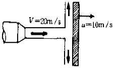
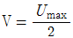
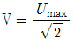
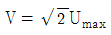
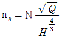
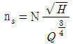
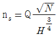
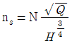
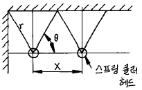

소방설비산업기사(기계) (2004-05-23 기출문제)
1과목: 소방원론
1. 산소의 농도를 어느 일정치 이하로 낮추어 화재를 진압하는 소화방법은?
- 부촉매소화
- 냉각소화
- 제거소화
- 질식소화
(정답률: 알수없음)

2. 다음중 연소하고 있는 드럼통에 물소화설비를 사용하여 효과적으로 끌 수 있는 물질은? (단, 괄호안은 물질의 비중)
- 벤젠(0.879)
- 아세톤(0.792)
- 이황화탄소(1.274)
- 에틸알콜(0.730)
(정답률: 64%)
3. B급 화재는 어떤 화재인가?
- 금속화재
- 일반화재
- 전기화재
- 유류화재
(정답률: 알수없음)
4. 건축물에 화재가 발생할 때 연소확대를 방지하기 위한 계획에 해당되지 않는 것은?
- 수직계획
- 피난계획
- 수평계획
- 용도계획
(정답률: 19%)
5. 고체 가연물질(용융물질)의 연소과정에서 일반적으로 거치는 4단계의 순서는?
- 용융 - 열분해 - 기화 - 연소
- 열분해 - 용융 - 기화 - 연소
- 기화 - 용융 - 열분해 - 연소
- 열분해 - 기화 - 용융 - 연소
(정답률: 42%)
6. 전기화재의 원인으로 볼 수 없는 것은?
- 승압에 의한 발화
- 과전류에 의한 발화
- 누전에 의한 발화
- 단락에 의한 발화
(정답률: 59%)
7. 실내화재에 있어서 후레쉬 오버 시점에서의 실내온도는 일반적으로 몇 ℃ 정도인가?
- 500∼600
- 800∼1000
- 1500∼1600
- 2000∼2100
(정답률: 82%)
8. 버너의 불꽃을 제거한 때부터 불꽃을 올리지 아니하고 연소하는 상태가 그칠 때까지의 경과시간은?
- 방진시간
- 방염시간
- 잔진시간
- 잔염시간
(정답률: 37%)
9. 자연발화에 대한 설명으로 틀린 것은 ?
- 외부로부터 열의 공급을 받지 않고 온도가 상승하는 현상이다.
- 물질의 온도가 발화점 이상이면 자연발화한다.
- 다공질이고 열전도가 작은 물질일수록 자연발화가 일어나기 어렵다.
- 기름걸레가 적층되어 있으면 자연발화가 일어나기 쉽다.
(정답률: 알수없음)
10. 가연물질이 재로 덮인 숯불모양으로 불꽃없이 착화하는 것을 나타내고 있는 것은?
- 발염착화
- 무염착화
- 맹화
- 진화
(정답률: 74%)
11. 제4류 위험물로 특수인화물에 해당되는 것은?
- 파라핀
- 금속칼슘
- 디에틸에테르
- 농황산
(정답률: 67%)
12. 착화 온도(착화점)가 가장 높은 물질은?
- 석탄
- 프로판
- 메탄
- 셀룰로이드
(정답률: 47%)
13. 소방대상물에서 방화관리자가 작성하는 소방계획서내에 포함되지 않는 것은?
- 화재예방을 위한 자체검사계획
- 화재시 화재실 진입에 따른 전술 계획
- 인원의 수용계획에 관한 사항
- 소방훈련 및 교육계획
(정답률: 40%)
14. 냉각소화에 사용되는 것으로 가장 흔한 것은?
- 포
- 물
- 이산화탄소
- 할론
(정답률: 59%)
15. CO2 농도가 10% 정도 방사 되었을 때 인체에 미치는 영향은?
- 마취성
- 동상
- 질식성
- 중독(독성)
(정답률: 알수없음)
16. 위험물의 제조소에서 게시판에 주의사항을 표시하려고 한다. 제4류위험물에 대한 표시는 어떻게 하는 것이 적당하겠는가?
- 물기주의
- 접근금지
- 화기엄금
- 충격주의
(정답률: 알수없음)
17. 지하층 화재특성에 대한 설명으로 옳지 않은 것은?
- 발화점을 찾기가 어렵고 내부상황을 파악하기가 어렵다.
- 규모에 따라서 차이는 있겠으나 지상 소방대상물에 비하여 진압활동의 어려움이 더 크다.
- 지하공간 화재는 연기로 인한 질식의 우려와 피난로의 확보가 매우 불투명하므로 주의하여야 한다.
- 지하공간과 지상공간이 연결되어 있는 구역은 피난을 위하여 방화구획을 하지 않는 것이 바람직하다.
(정답률: 85%)
18. 공기중 가연물의 위험도(H)가 가장 작은것은?
- 에테르
- 수소
- 에틸렌
- 프로판
(정답률: 44%)
19. 연소반응과 관계있는 것은?
- 산화반응
- 착화반응
- 환원반응
- 열발생 속도반응
(정답률: 64%)
20. 화재의 종류와 표시색이 잘못 짝지워 진 것은?
- B급- 적색
- C급- 청색
- D급- 무색
- A급- 백색
(정답률: 62%)
2과목: 소방유체역학
21. 제2종 분말 소화약제의 주성분은?
- 탄산수소칼륨(KHCO3)
- 탄산수소나트륨(NaHCO3)
- 제1인산암모늄(NH4H2PO4)
- 탄산수소칼륨 + 요소
(정답률: 54%)
22. 그림과 같이 평판이 u = 10 m/s의 속도로 움직이고 있다. 노즐에서 20 m/s의 속도로 분출된 분류(면적 0.02 m2)가 평판에 수직으로 충돌할 때 평판이 받는 힘은 얼마인가?

- 1 kN
- 2 kN
- 3 kN
- 4 kN
(정답률: 59%)
23. 다음 화학식 중 포소화기 약제를 방출표시하는 반응식은?
- 6NaHCO3+Al2(SO4)3·18H2O →6CO2+3Na2SO4+2Al(OH)3+18H2O
- H2SO4+2NaHCo3 → Na2CO3+2CO2+2H2O
- 2NaHCO3 → Na2CO3+CO2+H2O
- NH4H2PO4 → H3PO4+NH3
(정답률: 25%)
24. 어느 용기에서 압력(P)과 체적(V)의 관계는 다음과 같다. P=(50V+10)x102 kPa, 체적이 2 m3에서 4 m3으로 변하는 경우 일량은 몇 MJ 인가? (단, 체적 V의 단위는 m3이다.)
- 30
- 32
- 34
- 36
(정답률: 알수없음)
25. 소화배관 내의 유체유량 및 유속을 측정할 수 있는 기기가 아닌 것은?
- 마노미터
- 벤투리미터
- 로타미터
- 오리피스미터
(정답률: 24%)
26. 이상기체를 등온압축시킬 때 체적탄성계수는? (단, P는 압력, k는 비열비)
- 1/P
- P/k
- P
- kP
(정답률: 9%)
27. 관의 등가길이(등가관장)의 정의는? (단, 손실계수 K, 관 지름 d, 마찰계수 f)
- Kfd
- fd/K
- Kd/f
- Kf/d
(정답률: 알수없음)
28. 케비테이션(공동 현상)의 발생 원인과 관계가 먼 것은?
- 펌프의 설치위치가 물탱크보다 높을 때
- 관내의 유체가 고온일 때
- 펌프의 임펠러 속도가 클 때
- 펌프의 흡입측 수두가 작을 때
(정답률: 알수없음)
29. 원관에 유체가 층류로 흐를 때 최대속도(Umax)와 평균속도(V )와의 관계를 나타낸 것 중 맞는 것은?
- V=3Umax



(정답률: 알수없음)
30. 트랜지스터의 접점과 케이스의 정격 열저항은 2℃/W이고, 케이스와 주위와의 열저항은 30℃/W 이다. 주위 온도는 20℃, 동력방출은 1W일 때 접점의 온도는 얼마인가?
- 32℃
- 42℃
- 52℃
- 62℃
(정답률: 알수없음)
31. 직경 7.62 cm, 길이가 10 m인 소방호스에 1.67x10-3 m3/s의 물이 흐르고 있을때 평균유속을 구하면 몇 m/s 인가?
- 0.27
- 0.37
- 0.47
- 0.57
(정답률: 54%)
32. 연속 방정식(continuity equation)과 관련 있는 것은?
- 뉴튼의 제 2법칙을 만족시키는 방정식이다.
- 에너지와 일과의 관계를 보여주는 방정식이다.
- 유선상의 단위 체적당 모멘트를 나타내주는 방정식이다.
- 질량 보존의 법칙을 만족시키는 방정식이다.
(정답률: 39%)
33. 할로겐 화합물 소화약제의 번호 및 분자식의 조합으로 맞지 않는 것은 ?
- 할론 1042 - CCl4
- 할론 1211 - CBrClF2
- 할론 1301 - CBrF3
- 할론 2402 - C2Br2F4
(정답률: 54%)
34. 비중 S인 액체가 액면으로 부터 h cm 깊이에 있는 점의 압력은 수은주로 몇 mmHg인가? (단, 수은의 비중은 13.6이다.)
- 13.6Sh
- 1000Sh/13.6
- Sh/13.6
- 10Sh/13.6
(정답률: 19%)
35. 20℃에서 물이 지름 75 mm인 관속을 1.9 L/s 로 흐르고 있다. 이때 레이놀즈수를 구하면? (단, 20℃일때 물의 동점성계수는 1.006x10-6 m2/s이다.)
- 11284
- 19874
- 28294
- 32⑤7
(정답률: 24%)
36. 합성 계면 활성제포 소화약제를 이용한 포소화 설비가 가장 부적합한 장소는?
- 정유공장
- 발전소
- 카바이트 저장소
- 주차장
(정답률: 알수없음)
37. 직경 300 mm인 원관속을 4 kg/s의 공기가 흐르고 있다. 관속의 압력은 150 kPa, 온도는 21℃, 공기의 기체상수는 287J/kg.K 라고 할때 공기의 평균속도는 몇 m/s인가?
- 31.79
- 42.43
- 52.28
- 62.43
(정답률: 알수없음)
38. 압력이 300 kPa, 체적 1.66 m3인 상태의 가스를 정압하에서 열을 방출시켜 체적을 1/2로 만들었다. 기체가 한 일은 몇 KJ 인가?
- 249
- 129
- 981
- 399
(정답률: 알수없음)
39. 펌프에 흡입되는 물의 압력을 진공계로 측정하였더니 80mmHg였다. 이때 절대압력은 몇 kPa 인가? (단, 이때의 기압계는 750 mmHg를 가리키고 있다.)
- 110.6
- 103.5
- 89.3
- 10.9
(정답률: 16%)
40. 펌프의 비속도(ns)를 구하는 식으로 맞는 것은? (단, 기호는 Q : 유량, N : 회전수, H : 전양정 임)




(정답률: 45%)
3과목: 소방관계법규
41. 위험물제조소의 옥외에 있는 하나의 취급 탱크에 설치하는 방유제의 용량은 당해 탱크 용량의 몇 % 이상으로 하는가?
- 50
- 60
- 70
- 80
(정답률: 알수없음)
42. 옥외탱크저장소의 탱크 주위에 설치하는 방유제의 면적은 몇 m2 이하로 하여야 하는가?
- 30000
- 50000
- 80000
- 100000
(정답률: 64%)
43. 방화관리업무 등에 대한 강습은 연 몇회 실시 하도록 되어 있는가?
- 1
- 2
- 3
- 4
(정답률: 알수없음)
44. 석유판매취급소의 위치 및 시설로서 옳은 것은?
- 단층건축물 또는 건축물의 지하층에 설치하여야 한다.
- 단층건축물 또는 건축물의 1층에 설치하여야 한다.
- 지하층만 있는 건축물에 설치하여야 한다.
- 2층건물에 설치할 때에는 1층에는 석유판매취급소, 2층에는 작업실을 두도록 한다.
(정답률: 46%)
45. 관할 소방본부장 또는 소방서장의 건축허가 등의 동의를 요하는 건축물은?
- 연면적 300m2인 것
- 승강기 등 기계장치에 의한 주차시설로서 10대이상 주차 가능한 것
- 차고, 주차장으로 사용하는 층 중 바닥면적이 150m2인 것
- 특수장소로서 가스시설
(정답률: 40%)
46. 소방용 기계.기구 등을 제조하고자 하는 사람은 어떻게 하여야 하는가?
- 형식승인을 얻어야 하며 제품검사를 받아야 한다.
- 샘플검사를 의뢰하여 합격을 받아야 한다.
- 성능시험을 하여 그 성능을 명시하여 판매하면 된다.
- 제조업허가에 의하여 제품을 생산, 판매하면 된다.
(정답률: 70%)
47. 도시계획법에 의한 주거지역인 경우 소방용수시설은 당해 지역안의 각 소방대상물로 부터 하나의 소방용수시설까지의 거리가 몇 m 이내가 되도록 설치하여야 하는가?
- 100
- 120
- 140
- 160
(정답률: 67%)
48. 위험물취급소의 구분에 해당되지 않는 것은?
- 주유취급소
- 관리취급소
- 일반취급소
- 판매취급소
(정답률: 54%)
49. 위험물제조소 등의 변경허가를 받아야 하는 사항은?
- 펌프설비의 정비
- 지하탱크 맨홀의 정비
- 계량 및 안전장치의 교체
- 위험물탱크의 교체
(정답률: 알수없음)
50. 공동방화관리를 해야 하는 소방대상물의 규정에 속하지 않는 것은?
- 층수가 11층 이상의 건축물
- 지하가
- 지하층을 제외한 층수가 5층 이상인 복합건축물
- 4층 이상의 공동주택
(정답률: 알수없음)
51. 위험물중 산화성 액체 이며 제6류에 해당 되는 것은?
- 나트륨
- 칼륨
- 황산
- 황린
(정답률: 79%)
52. 특수장소로서 근린 생활 시설에 해당되는 것은?
- 극장
- 백화점
- 금융 업소
- 공공 도서관
(정답률: 22%)
53. 소방상 필요할 때 소방본부장.소방서장 또는 소방대장이 할 수 있는 명령에 해당되는 것은?
- 화재현장에 이웃한 소방서에 소방응원을 하는 명령
- 그 관할구역안에 사는 사람 또는 화재현장에 있는 사람으로 하여금 소화에 종사하도록 하는 명령
- 관계 보험회사로 하여금 화재의 피해조사에 협력하도록 하는 명령
- 소방대상물의 관계인에게 화재에 따른 손실을 보상하게 하는 명령
(정답률: 34%)
54. 옥내소화전설비의 증설공사를 하려고 한다. 최소 몇 개소 이상이면 시공신고를 하여야 하는가?
- 2
- 3
- 4
- 5
(정답률: 40%)
55. 연결살수설비를 설치하여야 할 소방대상물이 아닌 것은?
- 판매시설로서 바닥면적의 합계가 1000m2 이상인 것
- 지하층으로서 바닥면적의 합계가 100m2 이상인 것
- 가스시설중 지상에 노출된 탱크의 용량이 30톤 이상인 탱크시설
- 학교의 지하층 바닥면적의 합계가 700m2 이상인 것
(정답률: 40%)
56. 소방시설중 소화활동설비에 해당되는 것은?
- 누전경보기
- 비상방송설비
- 연결송수관설비
- 가스누설경보기
(정답률: 84%)
57. 소방시설관리사가 되고자 하는 사람은 누가 실시하는 시험에 합격하여야 하는가?
- 행정자치부장관
- 소방서장
- 경찰서장
- 노동부장관
(정답률: 알수없음)
58. 연결살수설비를 설치하여야 할 소방대상물의 기준면적 산정시 주요 구조부가 내화구조로 되어 있을때 기준면적에서 제외 될 수가 없는 부분은?
- 통신기기실
- 전기실
- 린넨슈우트
- 보일러실
(정답률: 40%)
59. 제조소등의 설치자는 위험물에 대한 안전관리업무를 하게 하기 위하여 국가기술자격법에 의한 위험물취급에 관한 자격취득자를 위험물 안전관리자로 선임하여야 하며, 그 위험물 안전관리자를 해임한 때에는 해임한 날부터 몇일 이내에 위험물 안전관리자를 선임 하여야 하는가?
- 100
- 90
- 60
- 30
(정답률: 79%)
60. 소방용수시설의 수원은 지면으로부터의 낙차가 몇 미터이하 이어야 하는가?
- 4.5
- 5.5
- 6.5
- 7.5
(정답률: 54%)
4과목: 소방기계시설의 구조 및 원리
61. 옥내 소화전 설비의 유효수량이 15,000ℓ 라고 하면 몇ℓ 를 옥상에 설치하여야 하는가?
- 5,000 이상
- 7,500 이상
- 10,000 이상
- 12,500 이상
(정답률: 알수없음)
62. 옥외 소화전 설비의 가압송수 장치로서 틀린 것은?
- 펌프 방식
- 고가수조 방식
- 압력수조 방식
- 지상수조 방식
(정답률: 25%)
63. 이산화탄소 소화설비 중 국소방출방식의 분사헤드가 저장 소화약제를 방사하는데 필요한 시간은 어느 것인가?
- 10초 이내
- 30초 이내
- 1분 이내
- 2분 이내
(정답률: 알수없음)
64. 다음은 할론 소화설비의 배관에 관한 사항이다. 적당치 않은 것은?
- 이음매 없는 강관을 사용할 때에는 스케쥴 40 이상이면 된다.
- 강관을 사용하는 경우에 아연도금등 방식처리한 것을 사용한다.
- 전용으로 할 것
- 동관을 사용하는 경우 저압식은 165kgf/cm2 이상의 압력에 견딜 수 있는 것으로 할 것
(정답률: 40%)
65. 다음과 같이 스프링 헤드를 정방형으로 배치했을 경우 X의 값은? (단, r = 2.3m 이하, 읨= 45° )

- 3.25m 이하
- 3.00m 이하
- 2.30m 이하
- 2.10m 이하
(정답률: 38%)
66. 수동식 소화기중 대형소화기에 충전하는 소화약제의 양은 할로겐 화합물 소화기의 경우 몇 kg 이상인가?
- 50
- 40
- 30
- 20
(정답률: 62%)
67. 위험물의 옥외 저장탱크에 설치하는 보조 포소화전의 호스 접결구는 방유제의 각 부분(방유제의 외측으로부터 방유제의 내측으로 10m까지의 부분)으로부터 수평거리 몇 m 거리에 설치하여야 하는가?
- 20m 이내
- 25m 이내
- 35m 이내
- 40m 이내
(정답률: 28%)
68. 물 분무 소화설비를 설치한 차고 또는 주차장의 배수설비 기준에 적합한 것은?
- 차량이 주차하는 장소의 적당한 곳에 높이 20cm 이상의 경계턱으로 배수구를 설치할 것
- 배수구에는 길이 40m이하 마다 기름분리장치를 설치할 것
- 차량이 주차하는 바닥은 배수구를 향하여 1/100 이상의 기울기를 유지할 것
- 배수설비는 기준헤드의 살수 수량을 유효하게 배제할 수 있는 크기 및 기울기로 할 것
(정답률: 28%)
69. 상수도 소화용수설비의 소화전을 지상용 옥외소화전으로 설치할 때, 지상으로부터 매몰하여야 하는 최소 깊이는?
- 60cm
- 75cm
- 100cm
- 110cm
(정답률: 알수없음)
70. 다음은 소화기구에 대한 설명이다. 틀린 것은?
- 자동확산식 소화용구를 제외한 소화기구는 바닥으로부터 높이 1.5m 이하의 곳에 설치하여야 한다.
- 마른모래가 설치되어 있는 곳에는 소화용 마른모래라고 표시한 표지를 하여야 한다.
- 팽창진주암이 설치되어 있는 곳에는 소화질석이라고 표시한 표지를 하여야 한다.
- 능력단위 2단위 이상이 되도록 수동식 소화기를 설치하여야 한다.
(정답률: 알수없음)
71. 포를 방사하는 소화기가 적응하지 않는 대상물은?
- 건축물
- 전기설비
- 석유류
- 석탄
(정답률: 59%)
72. 분말 소화약제 저장 용기의 경우 가압식의 것에 있어서는 최고 사용 압력의 몇배 이하에서 작동하는 안전 밸브를 설치하여야 하는가?
- 1.2배
- 1.5배
- 1.8배
- 2.0배
(정답률: 77%)
73. 다음 열거한 내용 중 옳은 것은?
- 소화설비의 가압장치는 각 설비별로 반드시 전용 설치하여야 한다.
- 스프링클러 설비 설치 대상 건물의 계단실 등에는 반드시 헤드를 설치하여야 한다.
- 소화설비 및 소화활동상 필요한 설비의 조작밸브 및 송수구, 방수구 등은 바닥으로 부터 0.8m 이상으로 하여야 한다.
- 연결살수 설비에 있어서 하나의 송수구역에 개방형 헤드를 설치할 경우에는 10개 이하로 하여야 한다.
(정답률: 알수없음)
74. 유량을 측정하기 위하여 피토게이지로 옥내소화전의 방수 압력을 측정하고자 한다. 피토게이지의 압력 도입부와 방수관창의 끝단과의 이격거리가 적당한 것은?(단, D:방수관창의 노즐직경)
- 2D
- D
- D/2
- D/3
(정답률: 62%)
75. 제연설비를 설치해야할 소방대상물 중 배출구, 공기유입구의 설치 및 배출량 산정에서 제외되는 것이 아닌 것은?
- 변소
- 목욕실
- 사람의 비 상주 50m2 미만 물품창고
- 전기실
(정답률: 55%)
76. 면적이 800평방미터인 사무실에 ABC급 축압식 분말소화기를 비치하고자 한다. 최소 A급 몇 단위가 필요한가? (단, 이 건물은 내화구조로서 내장재는 불연재이며, 고정식 소화설비는 설치되지 않았다.)
- 2 단위
- 4 단위
- 8 단위
- 16 단위
(정답률: 27%)
77. 제연설비에 사용되는 원심식 송풍기의 형태가 아닌 것은?
- 다익형
- 터보형
- 익형
- 프로펠러형
(정답률: 알수없음)
78. 연결송수관설비 건식의 경우에 설치순서로 적당한 것은?
- 송수구 - 자동배수밸브 - 체크밸브
- 송수구 - 자동배수밸브 - 체크밸브 - 자동배수밸브
- 송수구 - 체크밸브 - 자동배수밸브
- 송수구 - 자동배수밸브 - 자동배수밸브 - 체크밸브
(정답률: 63%)
79. 5층 백화점 건물에 스프링클러 설비를 설치하였다. 폐쇄형 스프링클러 헤드를 기준개수로 사용하였을 경우에 필요한 수원의 양은 몇 m3 이상이어야 하는가?
- 12m3
- 24m3
- 32m3
- 48m3
(정답률: 50%)
80. 일반적으로 사용되는 폐쇄형 스프링클러 헤드의 구경에 대한 호칭경은?
- 50A
- 25A
- 15A
- 10A
(정답률: 37%)